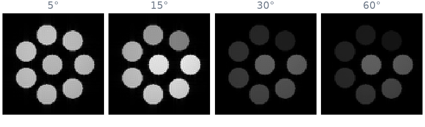
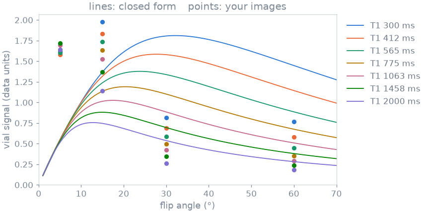

Note
Go to the end to download the full example code.
6. Test your pair on the virtual scanner#
You now have a sequence plugin (lesson 2) and a recon plugin (lesson 5). On a scanner they are two files in two folders, and the operator uses them like any shipped sequence and reconstruction. In this lesson you put them in those files, load them into the virtual scanner as a scanner would, and scan with them. Then you check the images against the physics: if the flip angle, the timing or the reconstruction were wrong, the contrast would show it.
Learning objectives
Save your plugins as the files a scanner loads.
Run the operator’s flow with them: protocol, edit, scan, image.
Compare the contrast of a flip-angle series with the closed-form signal of a spoiled gradient echo.
Previous: 5. Your recon plugin. This is the last lesson of the course; the Tours start from here.
Your plugins, as files#
A sequence plugin is a .py file in a folder of sequence plugins, and
the operator sees it under the file’s name. A recon plugin is a .py
file in a folder of recon plugins, with a module-level PLUGIN. Here are
the plugin of lesson 2, with its evaluate, and the plugin of lesson 5:
import tempfile
from pathlib import Path
work = Path(tempfile.mkdtemp())
(work / "sequences").mkdir()
(work / "recon").mkdir()
(work / "sequences" / "my_gre.py").write_text("""
from pypulseqpp.sequences import steady_state_dummies
from pypulseqpp.sequences.sequence.gre2D_sequence import gre2d
from pulserver.design import Evaluation, FloatParam, IntParam, SequencePlugin, TimeParam
from pulserver.protocol import TEPreset, UIParam
class Gre(SequencePlugin):
app = gre2d
protocol = {
UIParam.FLIP: FloatParam("flip_angle_deg", unit="deg", range_min=1, range_max=90),
UIParam.TE: TimeParam(
"te", range_min=1000, range_max=80000, presets={TEPreset.MINIMUM: None}
),
UIParam.TR: TimeParam("tr", range_min=1000, range_max=5_000_000),
UIParam.NY: IntParam("n_y", range_min=32, range_max=512, range_incr=2),
}
def evaluate(self, system, protocol):
arguments = protocol.arguments
n_y = arguments["n_y"]
one_line = arguments | {"ry": n_y, "n_acs_y": 0, "n_dummy": 0}
seq = self.app(system, **one_line)
te = seq.definitions["TE"][0]
tr = seq.definitions["TR"][0]
dummies = steady_state_dummies(tr, arguments["flip_angle_deg"])
return Evaluation(
protocol.replace({UIParam.TE: te, UIParam.TR: tr}),
duration=(dummies + n_y) * tr,
)
""")
(work / "recon" / "my_pics.py").write_text("""
import torch
import bartorch.tools as bt
from bartorch import apps, priors
from pulserver import recon
from pulserver.mrd import AcquisitionFlag
class Pics(recon.ReconPlugin):
def __init__(self):
super().__init__(
gadgets=[recon.RemoveReadoutOversampling()],
triggers={"imaging": AcquisitionFlag.LAST_IN_SLICE},
)
def recon(self, context, branch, data):
kspace = torch.from_numpy(data.data.kspace)[:, None] # (coils, z, y, x)
maps = bt.ecalib(kspace, maps=1)
image = apps.pics(kspace, maps, regularizers=priors.Wavelet((-1, -2), 0.005))
return recon.ReconResult(image.abs().squeeze(0).numpy())
PLUGIN = Pics()
""")
print(sorted(str(path.relative_to(work)) for path in work.rglob("*.py")))
['recon/my_pics.py', 'sequences/my_gre.py']
The virtual scanner, with your plugins#
The console of lesson 1 took no plugin folders and used the shipped
plugins. Point it at your two folders, and my_gre and my_pics are
what it offers. When the operator opens my_gre, the scanner shows your
four buttons, plus the number of averages pulserver adds:
from pulserver import virtual
from pulserver.protocol import (
TEPreset,
UIParam,
format_values,
parse_listing,
parse_validation,
)
system = """[Limits]
B0: 3.0
max_grad: 40
grad_unit: mT/m
max_slew: 150
slew_unit: T/m/s
[Limits End]
"""
console = virtual.Console(
plugins=[work / "sequences"],
recon_plugins=[work / "recon"],
limits=system,
store=work / "designs",
)
listing = console.design("list", "my_gre")["reply"]
block = listing[listing.index("[Protocol]") :]
print("\n".join(line for line in block.splitlines() if "|off|" not in line))
entries = parse_listing(block)
[Protocol]
flip: float|typein|12.0|1|90|1.0|deg
TE: int|dropdown|8000|1000|80000|1|us|-2
TR: int|typein|250000|1000|5000000|1|us
ny: int|typein|128|32|512|2|
nex: float|typein|1.0|1.0|16.0|1.0|
[Protocol End]
The phantom is the vials of lesson 1: seven vials of water whose T1 and T2 grow around the circle, and one of fat in the middle. Your plugin estimates coil maps, which needs more than one receive coil, so the exam puts the phantom in the body coil to transmit and a 48-channel head coil to receive.
localizer = console.exam("vials", coil="body/head48") # DICOM files
A flip-angle series#
The operator sets a TR of 50 ms and the minimum TE, and scans four times
with flip angles from 5° to 60°. Each scan is the flow of lesson 1: the
edit is validated, the sequence generated, and the scan played and
reconstructed by my_pics.
import base64
import io
import numpy as np
import pydicom
FLIPS = (5, 15, 30, 60)
def scan(flip):
"""Validate, generate and scan my_gre at a flip angle; return the image and TE in s."""
values = {key: entry.value for key, entry in entries.items()}
values.update(
{
UIParam.FLIP: flip,
UIParam.TR: 50_000, # µs on the wire
UIParam.TE: TEPreset.MINIMUM.value,
}
)
request = format_values(values, entries)
validation = parse_validation(
console.design("validate", "my_gre", request)["reply"], entries
)
te_ms = validation.values[UIParam.TE] / 1e3
print(f"{flip:2d}°: TE {te_ms:.2f} ms, scan time {validation.duration:.1f} s")
design = console.design("generate", "my_gre", request)["design"]
received = []
console.scan(
design,
rotation=np.eye(3),
centre_mm=(0.0, 0.0, 0.0),
emit=received.append,
recon="my_pics",
)
dicom = next(item["dicom"] for item in received if "dicom" in item)
return pydicom.dcmread(io.BytesIO(base64.b64decode(dicom))), te_ms / 1e3
images = {flip: scan(flip) for flip in FLIPS}
te = images[FLIPS[0]][1] # the minimum TE, the same for every flip angle

5°: TE 3.40 ms, scan time 12.6 s
15°: TE 3.40 ms, scan time 9.8 s
30°: TE 3.40 ms, scan time 7.7 s
60°: TE 3.40 ms, scan time 6.8 s
The four images are drawn on one grey scale. At 5° all the water vials are dim and alike; as the flip angle grows, the vials of short T1 brighten and those of long T1 fade.
Against the physics#
After its dummy TRs, an RF-spoiled gradient echo reaches a steady state whose signal is known in closed form:
Each vial’s T1 and T2 are known, so the curves below have no free parameter but one overall scale, the same for every vial and every scan, fitted by least squares. The points are the mean of each vial in your images.

Each vial peaks at its own Ernst angle, and the measured points follow the closed form for all seven vials with one shared scale. What remains, largest for the vials of long T2, is most likely the spoiling: a 117° RF phase increment does not remove the transverse magnetization completely, and the closed form assumes it does.
That agreement tests the whole chain at once: the flip angle and the timing
your sequence plugin designed, the conversion to the scanner’s cache, the
labels that sorted the raw data, and your reconstruction. A wrong unit in a
TimeParam, or a recon that scaled each scan differently, would break it.
The virtual scanner is a model. The agreement shows that the pair behaves as designed before a scanner is involved; it does not establish scanner or patient safety. Virtual scanner describes what it models.
On a scanner#
The same two folders are what pulserver is pointed at on a scanner: the design service takes the folder of sequence plugins and the reconstruction proxy the folder of recon plugins. Nothing in the files changes. Virtual scanner runs the same console from the command line, with MaRGE’s interface in front of it.
This is the end of the course. The Tours take each piece further.
As a spec#
What this lesson did, stated the way you would ask an agent for it:
Save the gre2d sequence plugin of lesson 2 as sequences/my_gre.py and the
pics recon plugin of lesson 5 as recon/my_pics.py. Load both folders into
a pulserver virtual.Console, start a vials exam in the body/head48 coil,
and scan my_gre with recon my_pics at a TR of 50 ms, the minimum TE and
flip angles of 5, 15, 30 and 60 degrees. Compare the mean of each water
vial with the closed-form spoiled gradient echo signal for its T1 and T2,
with one least-squares scale for all vials and scans.
Total running time of the script: (0 minutes 46.964 seconds)